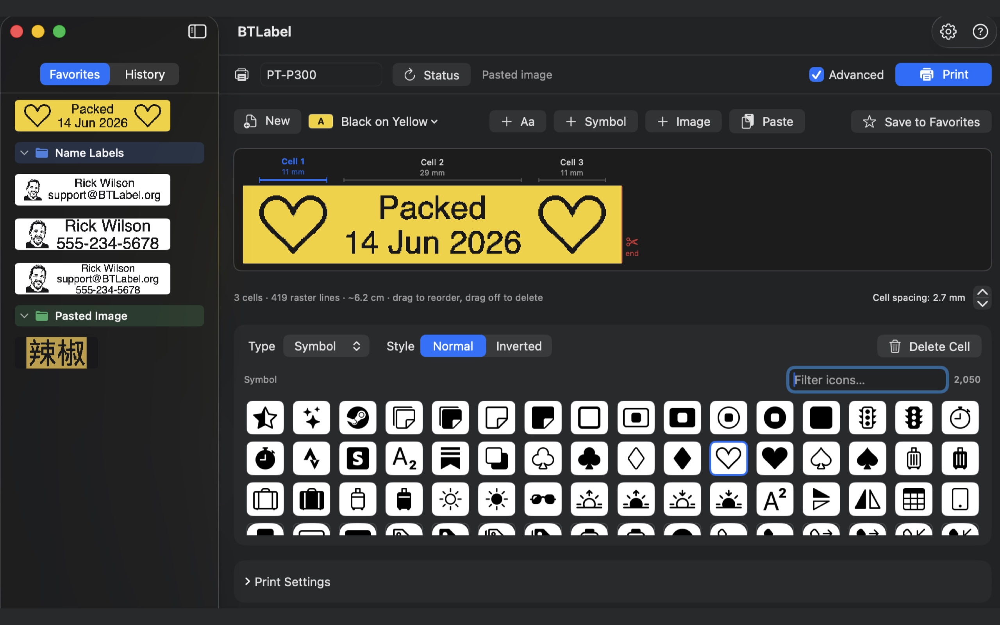
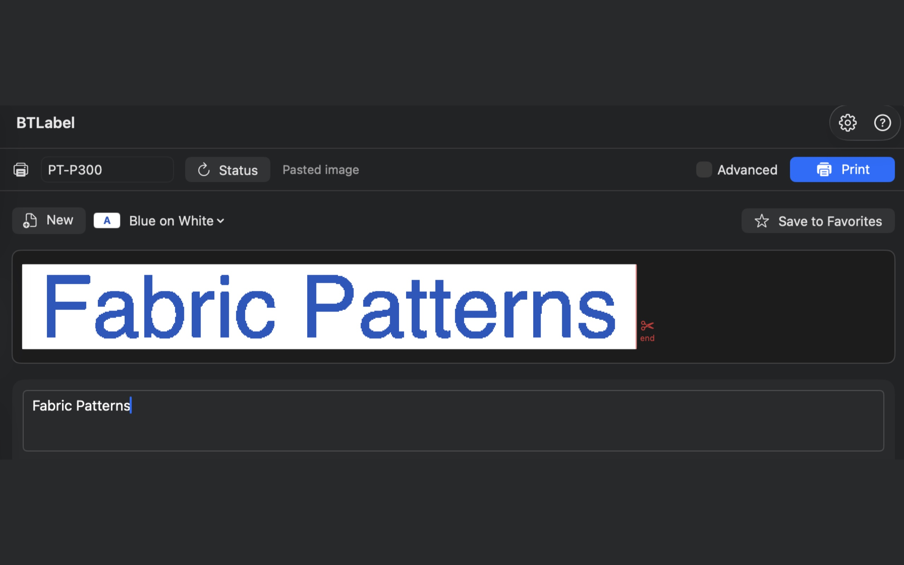
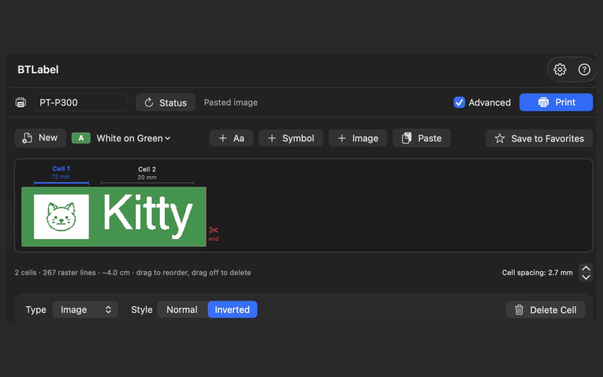
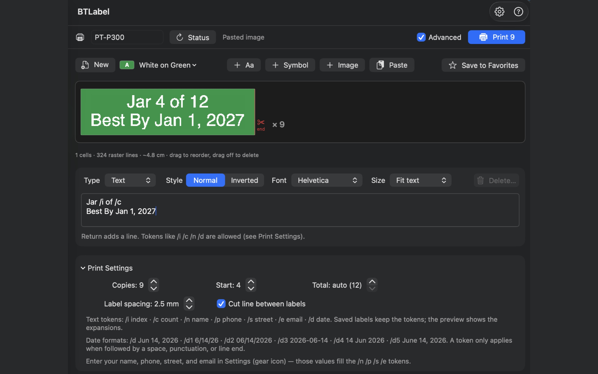
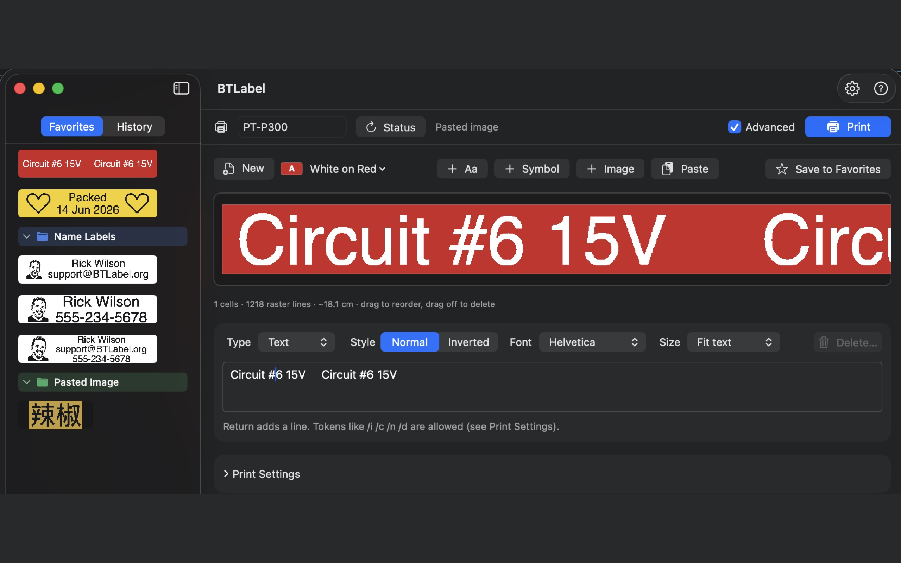
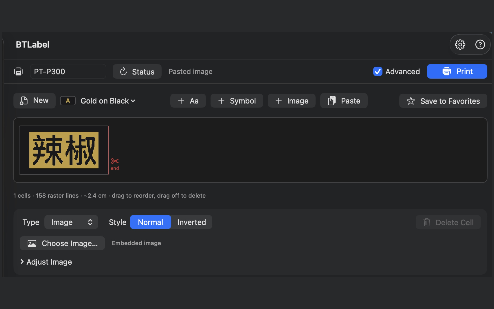

See it in action
Design on your Mac, print over Bluetooth — what you preview is exactly what prints.
Printing to a Brother PT-P300BT — the label that comes out matches the on-screen design.
Powerful when you need it

Built-in icons with instant search, favorites organized into folders, and a preview tinted to your tape's colors.
Simple by default

Basic mode keeps it to the essentials — type a line and print.
Icons & images

Add icons or images, and use the Inverted style for bold, knockout labels.
Batches & tokens

Print runs with automatic numbering and substitution tokens for names, counts, and dates.
Matches your tape

Pick your tape and the preview matches it — here, white on red.
Any language or symbol

Beyond Latin text: paste any logo or characters in as an image.